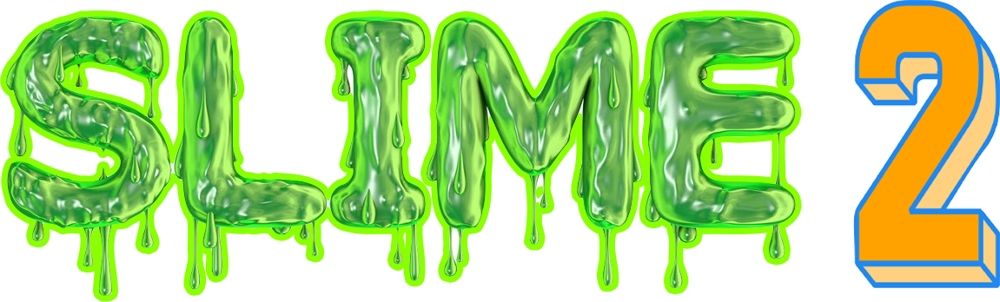

Semantics, Language, Information,
Meaning, and Expression • 2023
About
This is the website of the SLIME workshop at UCLA. Faculty organizers: Joshua Armstrong, Sam Cumming, and Gabriel Greenberg. Graduate student organizers: Jürgen Lipps and Alonso Molina. Events coordinator: Ashna Madni.
All are welcome. Please refresh this page as we update our information.
Format
The conference is pre-view. Each session is 100 minutes. The commentator will start the session with 15–20 min discussion. The speaker may reply for up to 15 minutes. The rest is Q+A.
Schedule
The workshop is May 19–20 at UCLA.
Friday, May 19
Kaplan Hall 193 [map]
- 10:00–11:40am — W. Starr, “Norms of Communication” [slides + transcript] [video]. Commentator: Giovani Rossi
- 11:40–1:00pm — Lunch: Shostak Terrace [map]
- 1:00–2:40pm — Seth Yalcin, “Iffy Knowledge” [handout]. Commentator: Torsten Odland.
- 3:00–4:40pm — Judith Fan, “Discovering Abstractions that bridge Perception, Action, and Communication” [video] Commentator: Gabbrielle Johnson [handout]
Saturday, May 20
Kaplan Hall 193 [map]
- [Abrusán talk canceled.]
Márta Abrusán, “Projection, Attention, and the Meaning of Negation” [video] [slides]. Commentator: Yael Sharvit [handout] - 10:00–11:40am — Guillermo Del Pinal, “Free choice and Presuppositional Exhaustification” [video]. Commentator: Sam Cumming [handout]
- 11:40–1:00pm — Lunch: Shostak Terrace [map]
- 1:00–2:40pm — Carolina Flores, “Identity Labels as Tools for Resistance” [video]. Commentator: Joshua Armstrong
- 3:00–4:40pm — Joshua Armstrong, “Evolutionary Foundations of Common Ground” [paper]
Speaker links:
SLIME is made possible through the generosity of the Kaplan-Panzer fund.